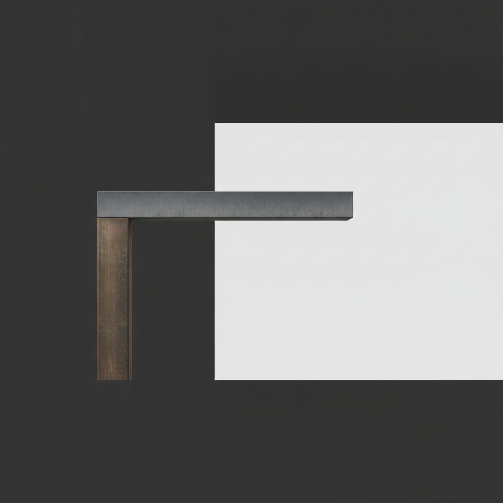

Drafted: 2026-06-18
OS Pillar: Operating Model OS
Quarterly Theme: The Machine
Subject: Por qué su sucesor sigue esperando
Preheader: Entregó la responsabilidad. Conservó la autoridad. No son lo mismo.
Resumen del Insight: Los dueños que postergan la sucesión descubren tarde que el modelo operativo construido para correr sin ellos genera, al mismo tiempo, las condiciones que empujan al sucesor a marcharse.
Esta semana: las transiciones de propiedad llegan a mesas que nadie terminó de armar.
Deloitte proyecta que las empresas familiares con más de 100 millones de dólares en ingresos crecerán 22% hacia 2030, con facturación al alza de 84% en el mismo periodo. La investigación, recogida esta semana por Family Business Magazine, señala a la sucesión como el mayor punto ciego del sector. Un 26% de esos dueños ya apunta a inversión externa o capital privado. Lea los tres datos juntos: los empresarios están a punto de operar las compañías más grandes que han dirigido, con ingresos casi al doble, mientras la pregunta de quién decide en realidad sigue sin respuesta. El crecimiento es real. El plan de relevo, en su mayoría, es un calendario.
Usted nombró a un sucesor. Le entregó el título. Quizá lo plasmó en el organigrama. Y las decisiones que importan siguen llegando a su escritorio.
Lo ve en las llamadas: el sucesor voltea hacia usted antes de comprometerse. Lo ve en los correos: consulta antes de avanzar. Usted le insiste, una vez más, en que decida. Asiente. La siguiente decisión vuelve a pasar por su mesa.
La lectura convencional es que no está listo. La lectura honesta es que usted no transfirió lo que dijo haber transferido.
Entregó la responsabilidad. Conservó la autoridad. No son lo mismo.
La responsabilidad es el trabajo de operar una función. La autoridad es el derecho de decidir sin su firma. La mayoría de los dueños cede lo primero y retiene lo segundo sin nombrarlo, porque lo segundo es lo que construyó el negocio. El sucesor hereda un puesto, no una participación real en las decisiones. Aprende rápido que la empresa sigue siendo suya. Y empieza a administrarlo a usted, en lugar de administrar el negocio.
Aquí es donde el asesor convencional se equivoca. Recomienda más tiempo, más coaching, más claridad en el organigrama. El organigrama no es el cuello de botella. Los derechos de decisión sí lo son.
Hay un segundo costo, menos visible. Mientras el sucesor decida bajo su sombra, más pequeña le parecerá la oportunidad que está recibiendo. Con el tiempo se va, o deja de empujar, o acepta el título sin el rol. La transferencia fracasa antes de comenzar.
Dentro de Operating Model OS, la transferencia de autoridad tiene tres capas que deben moverse en secuencia. Alcance: nombre las categorías de decisiones que son solo suyas, como contratación por debajo de cierto nivel, precios dentro de una banda, contratos con proveedores bajo un umbral. Umbral: el monto o el límite de riesgo a partir del cual usted quiere ser consultado, no preguntado. Derecho de reversa: quién puede revocar la decisión del sucesor, cuándo y bajo qué proceso.
La mayoría cede el alcance y se reserva, en silencio, el derecho de reversa. El equipo lo descubre en un trimestre. Empieza a esquivar al sucesor y vuelve a tocar su puerta. El título se vuelve decoración. El orden no es negociable: alcance, umbral, reversa. Una vez escrito el derecho de reversa, hay que ejercerlo lo suficientemente poco para que siga siendo respaldo, no opción por defecto.
El trabajo es suyo, y es más difícil que nombrar al sucesor. Le piden confiar en un líder incompleto que opera un sistema incompleto. Es lo opuesto a cómo construyó la empresa. Esa confianza es la transferencia real. Lo demás es papeleo.
Esta semana, revise las últimas diez decisiones que tomó. Para cada una, pregúntese: ¿debió haberla decidido su sucesor? Escriba el umbral por arriba del cual sí quiere ser consultado. La distancia entre lo que decidió y lo que ahora delegaría es su mapa real de sucesión. Muéstreselo a su sucesor. La conversación que abre es la que lleva tiempo postergando.
Sección: spotlight
Un CEO de segunda generación escribe esta semana en Chief Executive que, quince años después de heredar la empresa familiar a los 29, la lección más dura del liderazgo no fue tomar el mando: fue soltarlo.
Tenía el título. Tenía el edificio. Y aun así describe el trabajo de soltar como el problema más difícil. En esa misma semana, Yum Brands vendió Pizza Hut a LongRange Capital por 1,500 millones de dólares. Una operación en la que el private equity se queda con una marca que la matriz cotizada no quiso, o no pudo, operar como el comprador considera que debe operarse.
Distintas escalas. Distintos sectores. El mismo patrón. En ambos casos, el modelo operativo llegó al traspaso sin terminar de construirse, y el costo de completarlo quedó incorporado al trato.
Para el dueño mexicano de una empresa de entre 5 y 100 millones de dólares, la primera pregunta del comprador en los primeros noventa días no es cuál es la estrategia. Es quién decide qué y dónde está escrito. Si la respuesta es el dueño —en su cabeza—, el múltiplo se comprime antes de cerrar la auditoría.
Decision Rights One-Pager (armado con Claude o ChatGPT). Una sola página que enlista las veinte decisiones recurrentes más comunes del negocio y asigna cada una a un rol, con su umbral en dinero o riesgo. Por qué importa para un dueño de 5 a 100 millones de dólares: obliga la conversación que ha estado postergando y le da al sucesor algo concreto a qué referirse cuando el equipo intenta esquivarlo. Empiece pegando las últimas treinta decisiones que tomó en la herramienta y pídale que las agrupe; luego, que proponga responsable, umbral y derecho de reversa para cada grupo.
La señal a seguir esta semana: las decisiones que llegan a su bandeja de entrada y que su sucesor, nombrado o no, debería estar tomando. Cuéntelas. El número es el diagnóstico, no el contenido. Si supera las cinco, la transferencia no ha comenzado. Si está por debajo de cinco, identifique cuáles siguen llegando a usted y por qué. Ahí vive el trabajo real de sucesión.
Si algo de este número resonó contigo, respóndeme - leo cada mensaje.
Si le es útil a alguien en tu red, reenvíalo - es el mayor cumplido.
Cuando estés listo para trabajar juntos directamente, así es como empezamos: [link]
Draft generated by the pipeline. Review and edit before sending.